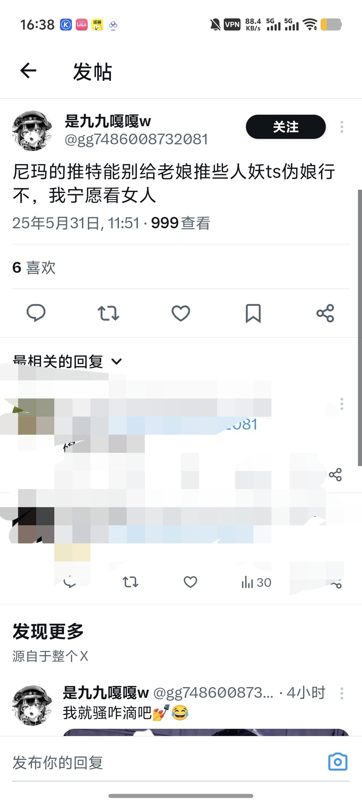
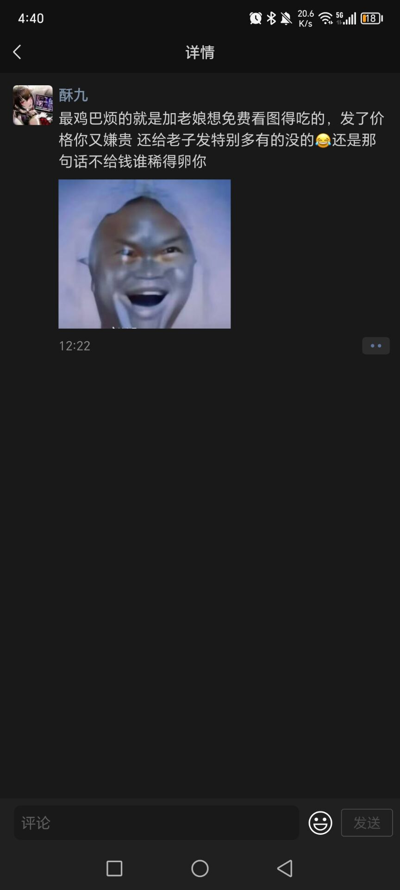
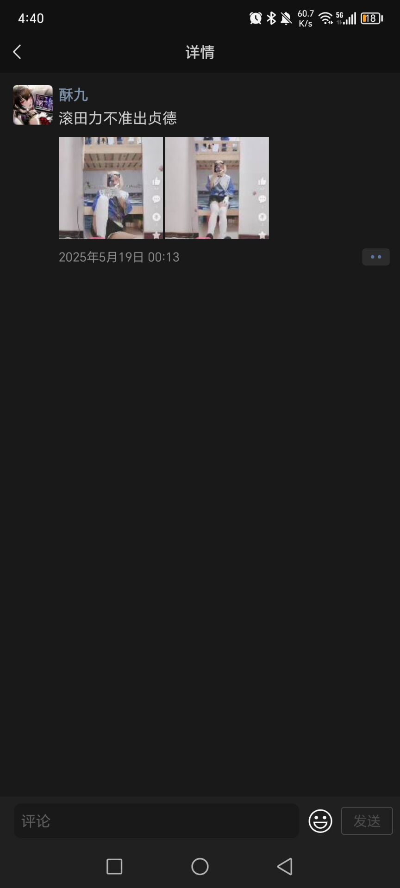

穗_我爱你🏳️⚧️💛🤍💜🖤
@Sui_aini
顺女走男娘路线，是因为卖逼卖不出去了吗



球形闪电电official
@qxsddofficial
吃饭砸锅，端碗骂娘
你cos男娘/小男孩角色并以此圈钱，圈完了还反手骂一波男coser。能不能要点脸啊我请问了？
你要是说，是你看见的那些质量不好，那你攻击那一个就好了，干嘛用“田力”这一厌男辱男词呢？
你还嫌推特给你推男娘？那你出男娘做甚？
属实是吃饭砸锅，端碗骂娘！ https://t.co/AIehvKcnB2